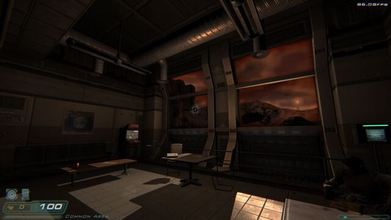
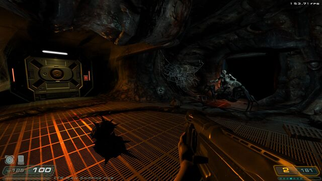
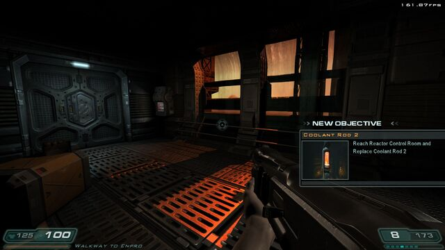
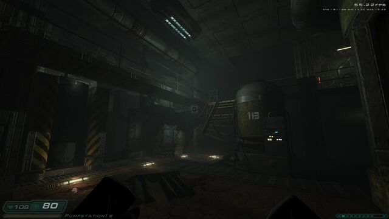
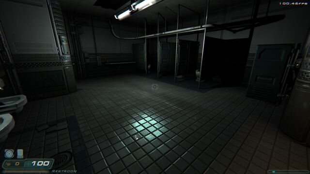
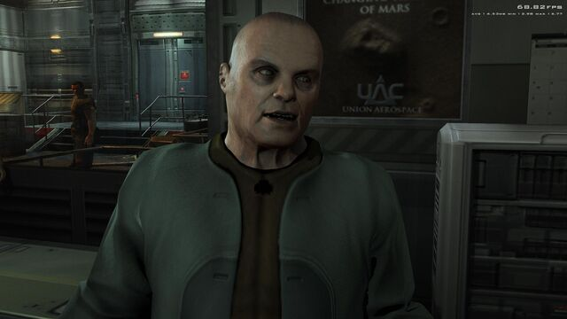

What is DUDE?
DUDE (the Doom3 Unified Development Engine) is a new engine for the DOOM 3 games and Quake 4. It replaces the program that runs the game, not the game itself: your maps, monsters, story and saves stay exactly as id Software and Raven made them.
What changes is how the game is drawn. Pick a quality preset in the menu: Potato is the untouched 2004 look, and every step up adds modern lighting, shadows and effects. On a graphics card with ray tracing you can go further, up to a path-traced mode where every light in the level is traced in real time.
DUDE does not include any game files. You need your own copy of the game from Steam, GOG or the original discs. The install guide covers each case step by step.
Games it runs
DOOM 3
The 2004 original. Steam, GOG or CD/DVD (patched to 1.3.1).
Resurrection of Evil
The official expansion, with its own game code.
The Lost Mission
The community port of the BFG Edition's extra chapter.
Quake 4
The full retail single-player campaign, new in 0.9.8.
Highlights
The classic look, kept
Every improvement is optional. The lowest preset is the original renderer, untouched, and the gameplay is never changed.
One menu, six presets
Potato, Low, Medium, High, Ultra and Nightmare. Choose one in the System options and DUDE sets everything else for you.
Ray tracing and path tracing
On RTX, Radeon RX 6000+ and Arc cards: traced shadows, reflections and bounce light, or fully path-traced lighting.
Smooth on modern PCs
High refresh rates while the game logic stays at its native speed, variable refresh (G-Sync/FreeSync) and fast level loads.
Saves and mods keep working
Loads savegames from retail DOOM 3, dhewm3 and every DUDE release. Runs mods built for dhewm3 1.5.5.
Controllers
Xbox-style pads work, with one-click default bindings for DOOM 3 and its expansions (settings menu, F10).
Screenshots


Common Area

Main Shaft

Walkway to Enpro

Pump Station

Restroom

BetrugerMore images and videos on the ModDB page.
Download
Not sure which file you need? The downloads page explains each one.
Community
Donations go toward the hardware needed to build and test real HDR output and the ray-tracing pipeline.